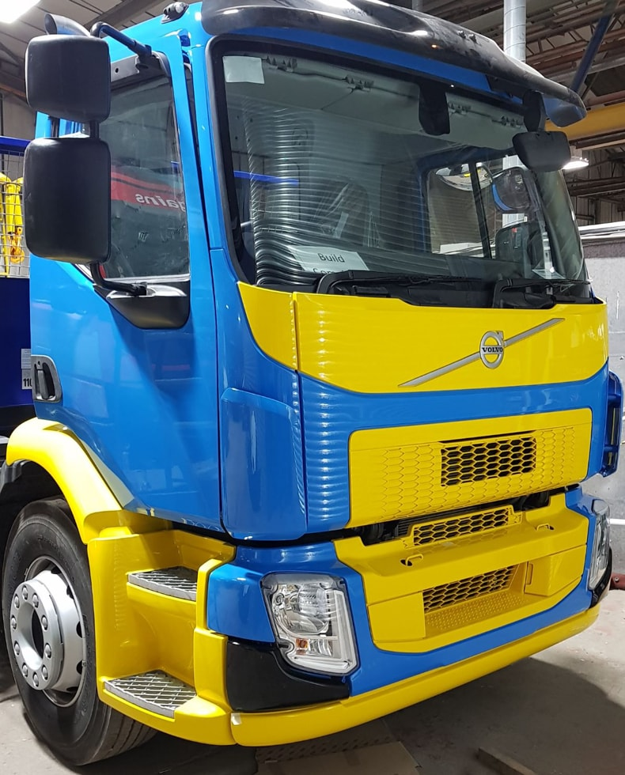

Professional truck painting services
Finding the right company to paint your truck is essential when you want to keep your company looking at its best on the road. So, what should you look for when choosing a truck respray and paint refinishing service? A professional truck painting service will paint trucks from all makes and models, from smaller trucks right up to the largest commercial vehicles.  Look for a truck painting company which paints both new and old trucks, and one which offers services from a simple panel respray to a full body overhaul.
The best truck painting companies
The best truck painting companies offer all types of paint finishes and use only the highest quality products, expertly matching paint manufacturers’ swatches using PPG and Glasurit computerised paint mixing systems. These will reproduce an exact colour match of all commercial vehicles which—together with a dust-free environment—will produce a finish which will match the most demanding standards.
A professional commercial truck painting service will be EPA registered, and Office of Fair Trading Approved and have the latest facilities and skilled technicians.
Commercial Colours
We asked Mark Jaques, founder of UK-based commercial vehicle accident, repair, and painting centre Commercial Colours about how to choose the right truck painting company, and he said:
Whether you have a new or old truck, keeping your company looking at its best on the road is important. Look for a truck painting service which is EPA registered and approved, has the latest facilities, skilled technicians, and years of experience.